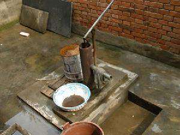
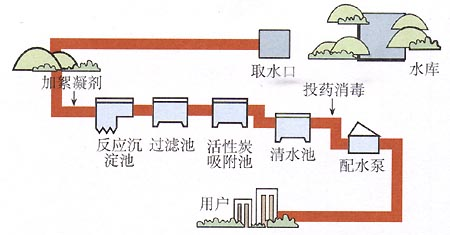
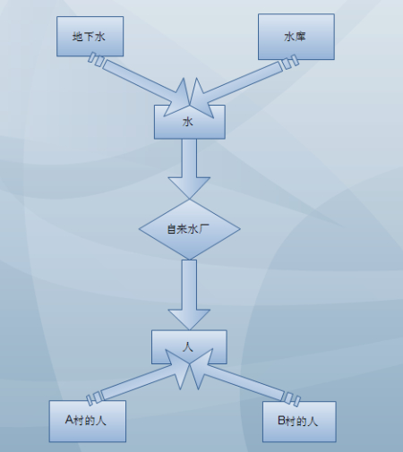
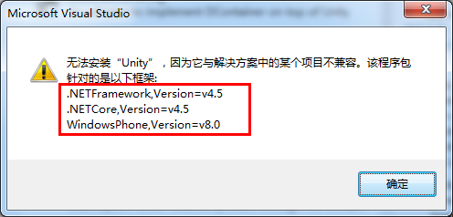

小菜学习设计模式（五）—控制反转（Ioc）
写在前面
设计模式目录：
- 小菜学习设计模式（一）—模板方法（Template）模式
- 小菜学习设计模式（二）—单例（Singleton）模式
- 小菜学习设计模式（三）—工厂方法（Factory Method）模式
- 小菜学习设计模式（四）—原型（Prototype）模式
- 小菜学习设计模式（五）—控制反转（Ioc）
- 持续更新中。。。
本篇目录：
好长时间没有更新设计模式系列了，不是不想写，奈何小菜功力有限，这段时间也在给自己充电，毕竟路要一步一步走，急不得。
控制反转（Inversion of Control）是解决程序耦合问题的一种方案，还有种叫法是依赖注入（Dependency Injection），但我感觉Ioc（控制反转）是一种思想，DI（依赖注入）是实现这种思想的一种方式，或者说Ioc是一种概念，DI是这种概念的思想，不知道我这样理解的对不对。可能一开始接触这些东西有点莫名其妙，园友们写的一些东西也看得头疼，至少我当时是这样，如果你是像我一样的菜鸟，请跟我一起学习下，不看代码，我们先看一个生活中的例子-压水井和自来水厂的故事。
内容有点多，请坚持往下看哦！
压水井

小时候在农村喝水都是自家打井或是用电水泵取水，想什么时候喝就什么时候喝，想喝多少就喝多少，很方便，而且不用花钱。但是有个问题是，家里面的房子要装修或是重建，原来打的井已经不适合新建的房子了，也就是说需要重新打井，这就很麻烦，建多少次房子，需要打多少次的井（当然土豪才这样）。
我们先看这个小示例，其实如果抽象一点的话，有点类似工厂模式，为什么？我们分析下：上面例子中的水可以看成一个产品，每家的井或是电水泵可以看成一个工厂，自己根据自家的情况来“生产”出来水，只有一家有井或是电水泵还好（其他家去他家取水，但不现实），如果每家都有一个井或是电水泵，就有点工厂泛滥的情况发生了，可能会出现：
- 水污染：每家都吃不上水，这里面的水出现问题就是产品出现问题，这样我们就需要在每个工厂里面进行处理，就比如需要在每家的井或电水泵上安装一个净水器，显然代价比较大，也不太现实。
- 整体搬迁：原来的井或电水泵用不了了，每家的井或电水泵就需要重新搞，可能不太现实，当然只是做个假设，细想一下，这个问题的根源其实就是井或电水泵太多了，也就是工厂泛滥。
上面所说的问题为什么会出现？其实就是依赖关系作祟，每一家都要依赖自家的井或电水泵，也没办法，毕竟人要喝水，总不能跑到地下暗河去喝吧，只能通过井或电水泵（工厂）来取水（调用），这个问题在编程中就是依赖倒置原则的反例，何为依赖倒置原则：
- 高层次的模块不应该依赖于低层次的模块，他们都应该依赖于抽象。
- 抽象不应该依赖于具体，具体应该依赖于抽象。
第一点：高层次模块（使用者）就是每户人家，低层次模块（被使用者）就是压水井或电水泵，可以看出他们都是依赖于具体的对象，而并非依赖于抽象；第二点：水（抽象）依赖压水井或电水泵（具体），人（具体）依赖压水井（具体），而并非具体依赖于抽象。可以看出这两点完全不设和依赖倒置原则，怎么解决问题呢？请看下面。
自来水厂
上面的示例中其实有个三个对象：每户人家、压水井或电水泵、水，就是在探讨他们三个这之间的依赖关系，明确这一点很重要。

随着时代的发展，压水井和电水泵慢慢消失在我们的视野中（当然现在还有很多落后的地方在用，比如像我老家），政府就在每个村庄或是几个村庄之间建设自来水厂，为什么政府要建设自来水厂？难道他们都是搞编程的？知道工厂泛滥的坏处？哈哈，我觉得应该是多收点钱吧，你觉得呢？开个玩笑。
不管政府目的如何，但好像解决了工厂泛滥的一些问题，我们再来分析下有了自来水厂会有什么不同，我们画个示意图看下：

画的比较丑（莫笑），但是简单的意思还是可以表达的，图中的人和水都是抽象的，地下水和水库依赖于于抽象的水，A村的人和B村的人依赖于抽象的人，人和水怎么关系呢？这个就有自来水厂决定了，它让你喝地下水，你就不能喝水库的水。这就基本符合依赖倒置原则：抽象不依赖于具体，具体依赖于抽象。
这中间关键在于自来水厂，没了压水井，有了自来水厂，我们看看上面压水井的“工厂泛滥”问题能不能解决？
- 水污染：比如地下水出现问题，因为自来水厂不依赖地下水，而是依赖于抽象的水，地下水有问题，那我用水库的水，水库的水如果有问题，那我们用雨水净化。。。我们人喝到的不管什么水？反正都是水，不影响我们喝水就行了。
- 整体搬迁：比如A村的人因为某些原因，要搬到B村，如果是上面压水井的模式，帮过去就需要重新打井了，但是有了自来水厂，我只需要接个管线，按个水龙头就行了，就这么简单。
从上面的分析来看，建设自来水厂确实比压水井可靠多了，回到我们这篇要讲的正题-控制反转（Ioc），你可能也有些明白了，其实自来水厂就可以看做是Ioc，用什么样的水？给什么样的人？都是自来水厂决定，好处就不用多说了，上面已经讲明，套用到编程里面是相同的道理，只可意会哦。
说到这里，你不禁有些惊讶，难道政府里面有系统架构师？哈哈笑过。
上面的示例，下面我们再来用代码复述一下，毕竟理论要结合实践。
压水井的问题-依赖
压水井模式有三个对象：人、压水井、水，我们就用常规的方式简单写下代码：

1 /// <summary> 2 /// 村民 3 /// </summary> 4 public class VillagePeople 5 { 6 public void DrinkWater() 7 { 8 PressWater pw = new PressWater(); 9 UndergroundWater uw = pw.returnWater(); 10 if (uw!=null) 11 { 12 Console.WriteLine("地下水好甜啊！！！"); 13 } 14 } 15 } 16 /// <summary> 17 /// 压水井 18 /// </summary> 19 public class PressWater 20 { 21 public UndergroundWater returnWater() 22 { 23 return new UndergroundWater(); 24 } 25 } 26 /// <summary> 27 /// 地下水 28 /// </summary> 29 public class UndergroundWater 30 { 31 }
上面的代码就是简单演示村民通过压水井喝水的过程，因为村民不能直接取得水，只能通过压水井取得地下水，很明显我们可以看出之间的依赖关系：
- VillagePeople依赖于PressWater
- VillagePeople依赖于UndergroundWater
- PressWater依赖于UndergroundWater
我们在做业务处理的时候，简单的依赖关系可以用上面的方式处理，如果太复杂的话就不行了，牵一发而动全身总归不是很好。
大家可能说，上面不是讲到“工厂泛滥”问题，这边怎么没指出？因为PressWater某一方面其实就可以看做一个小工厂，每家的压水井不一样，这边只是说某一种，“工厂泛滥”其实就是依赖作祟，上面的例子说明的是依赖关系，一样的道理，所以下面就用这个例子来做一些东西。
压水井的问题解决-依赖倒置
我们在讲压水井的时候提到过依赖倒置原则，这边就不再说了，因为VillagePeople依赖于PressWater、VillagePeople依赖于UndergroundWater、PressWater依赖于UndergroundWater，我们可以把PressWater（压水井）和UndergroundWater（地下水）抽象出来，UndergroundWater属于水的一种，可以抽象为IWater，PressWater因为是获取水的方式之一，可以抽象为IWaterTool，这边就要面向接口编程了，根据依赖倒置原则，我们把上面的代码修改一下：
1 /// <summary> 2 /// 村民 3 /// </summary> 4 public class VillagePeople 5 { 6 public void DrinkWater() 7 { 8 IWaterTool pw = new PressWater(); 9 IWater uw = pw.returnWater(); 10 if (uw != null) 11 { 12 Console.WriteLine("水好甜啊！！！"); 13 } 14 } 15 } 16 /// <summary> 17 /// 压水井 18 /// </summary> 19 public class PressWater : IWaterTool 20 { 21 public IWater returnWater() 22 { 23 return new UndergroundWater(); 24 } 25 } 26 /// <summary> 27 /// 获取水方式接口 28 /// </summary> 29 public interface IWaterTool 30 { 31 IWater returnWater(); 32 } 33 /// <summary> 34 /// 地下水 35 /// </summary> 36 public class UndergroundWater : IWater 37 { } 38 /// <summary> 39 /// 水接口 40 /// </summary> 41 public interface IWater 42 { }
从上面的代码可以看出，UndergroundWater依赖接口IWater，PressWater依赖IWaterTool和IWater，VillagePeople依赖IWaterTool和IWater，这样就符合依赖倒置原则了，都是依赖于抽象，从而降低耦合度，这样当一个方式变化了不会影响到其他，地下水污染了，我可以通过别的获取工具获取水，而不至于没水喝。
但是上面说的忽略了个问题，接口总是会被实现的，也就是总会执行：IWaterTool pw = new PressWater();这样耦合度就产生了，也就是VillagePeople依赖于PressWater，我们可以通过工厂参数来产生不同的获取工具对象，这种方式表面上虽然解决了问题，但是实质上代码耦合度并没有改变，怎么办呢？请接着往下看。
自来水厂-Ioc
通过Ioc模式可以彻底解决上面我们提到耦合的问题，它把耦合从代码中移出去，放到统一的XML文件中，通过一个容器在需要的时候把这个依赖关系形成，即把需要的接口实现注入到需要它的类中。就像自来水厂一样，水的来源、水的去处都是它来决定，人们只要通过它来喝水就行了，而不需要考虑的太多。
早在微软提供的一个示例框架PetShop中就有Ioc的体现，只不过那时候不太懂，PetShop是通过反射创建对象，上面的代码我们修改一下：
1 /// <summary> 2 /// 村民 3 /// </summary> 4 public class VillagePeople 5 { 6 public void DrinkWater() 7 { 8 IWaterTool pw = (IWaterTool)Assembly.Load(ConfigurationManager.AppSettings["AssemName"]).CreateInstance(ConfigurationManager.AppSettings["WaterToolName"]); 9 IWater uw = pw.returnWater(); 10 if (uw != null) 11 { 12 Console.WriteLine("水好甜啊！！！"); 13 } 14 } 15 }
上面代码中我们只需要在配置文件中添加获取水工具的名称WaterToolName就行了，因为一种工具对应获取特定的一种水，所以水的种类不需要配置。地下水污染了，我们只需要在配置文件中修改一下WaterToolName就可以了。
Ioc模式，系统中通过引入实现了Ioc模式的Ioc容器，即可由Ioc容器来管理对象的生命周期、依赖关系等，从而使得应用程序的配置和依赖性规范与实际的应用程序代码分开。其中一个特点就是通过文本的配置文件进行应用程序组件间相互关系的配置，而不用重新修改并编译具体的代码。
看到这里，是不是感觉Ioc模式有点“热插拔”的意思？有点像USB一样呢？
自来水厂运行-DI
如果把自来水厂看做Ioc，那我觉得依赖注入（DI）就是这个自来水厂的运行模式，当然其实是一个意思，依赖注入是什么？全称Dependency Injection，我们从字面上理解下：需要的接口实现注入到需要它的类中，这就是依赖注入的意思。自来水厂获取水源的时候，控制这个获取水源的开关可以看做是依赖注入的一种体现，话不多说，懂得就好。
依赖注入的方式有很多，就像控制获取水源的开关有很多一样。
- 构造器注入（Constructor Injection）：Ioc容器会智能地选择选择和调用适合的构造函数以创建依赖的对象。如果被选择的构造函数具有相应的参数，Ioc容器在调用构造函数之前解析注册的依赖关系并自行获得相应参数对象；
- 属性注入（Property Injection）：如果需要使用到被依赖对象的某个属性，在被依赖对象被创建之后，Ioc容器会自动初始化该属性；
- 方法注入（Method Injection）：如果被依赖对象需要调用某个方法进行相应的初始化，在该对象创建之后，Ioc容器会自动调用该方法。
有时间可以好好研究下依赖注入的各种方式，这边我们就使用微软提供的Unity实现依赖注入，方式是构造器注入，首先使用Nuget工具将Unity添加到项目中，安装Unity需要.net framework4.5支持。

添加完之后，发下项目中多了Microsoft.Practices.Unity和Microsoft.Practices.Configuation两个dll，代码如下：
1 /// <summary> 2 /// 人接口 3 /// </summary> 4 public interface IPeople 5 { 6 void DrinkWater(); 7 } 8 /// <summary> 9 /// 村民 10 /// </summary> 11 public class VillagePeople : IPeople 12 { 13 IWaterTool _pw; 14 public VillagePeople(IWaterTool pw) 15 { 16 _pw = pw; 17 } 18 public void DrinkWater() 19 { 20 IWater uw = _pw.returnWater(); 21 if (uw != null) 22 { 23 Console.WriteLine("水好甜啊！！！"); 24 } 25 } 26 }
调用代码：
1 static void Main(string[] args) 2 { 3 UnityContainer container = new UnityContainer(); 4 container.RegisterType<TestFour.IWaterTool, TestFour.PressWater>(); 5 TestFour.IPeople people = container.Resolve<TestFour.VillagePeople>(); 6 people.DrinkWater(); 7 }
首先我们创建一个Unity容器，接下来我们需要在容器中注册一种类型，它是一个类型的映射，接口类型是IWaterTool，返回类型为PressWater，这个过程中就是要告诉容易我要注册的类型。
比如自来水厂要用地下水作为水源，这时候操作员输入命令，就是RegisterType，参数为IWaterTool、PressWater，下面就是调用Resolve生成对象，这个过程表示要把水输送到哪户人家，命令是Resolve，参数为VillagePeople，接下来就是直接打开水龙头喝水了，很方便吧。
关于依赖注入其实有很多的东西，上面的示例只是抛砖引玉，有时间的话好好研究下，比如依赖注入的其他方式等等。
后记
上面的示例代码没多少东西，如果有感兴趣的朋友可以下载看看，地址：http://pan.baidu.com/s/1ntK61wl
这篇写完，关于创建对象型模式就差不多了，接下来就是构建复杂结构型模式了，学习这些东西，都是为了写出更好的代码，当然还有很长的路要走，革命尚未成功，同志仍需努力，也希望你与我共勉。
如果你觉得本篇文章对你有所帮助，请点击右下部“推荐”，^_^